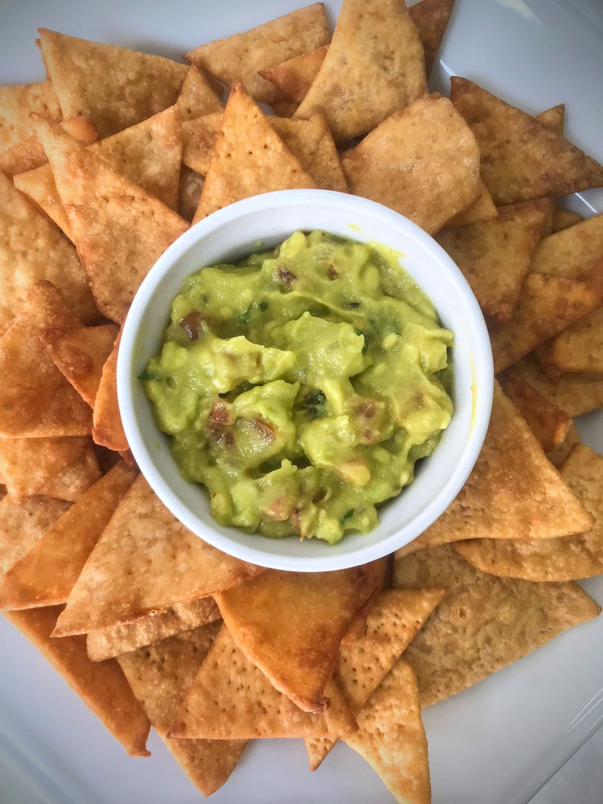
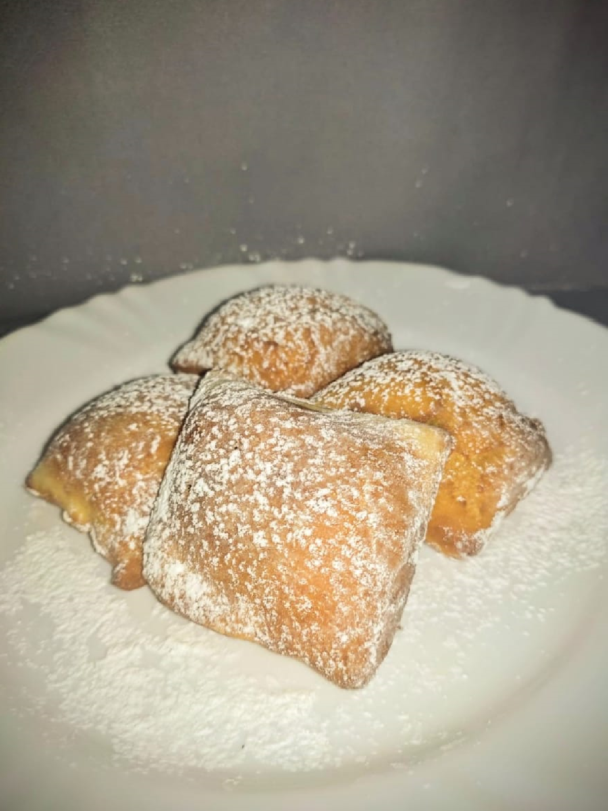
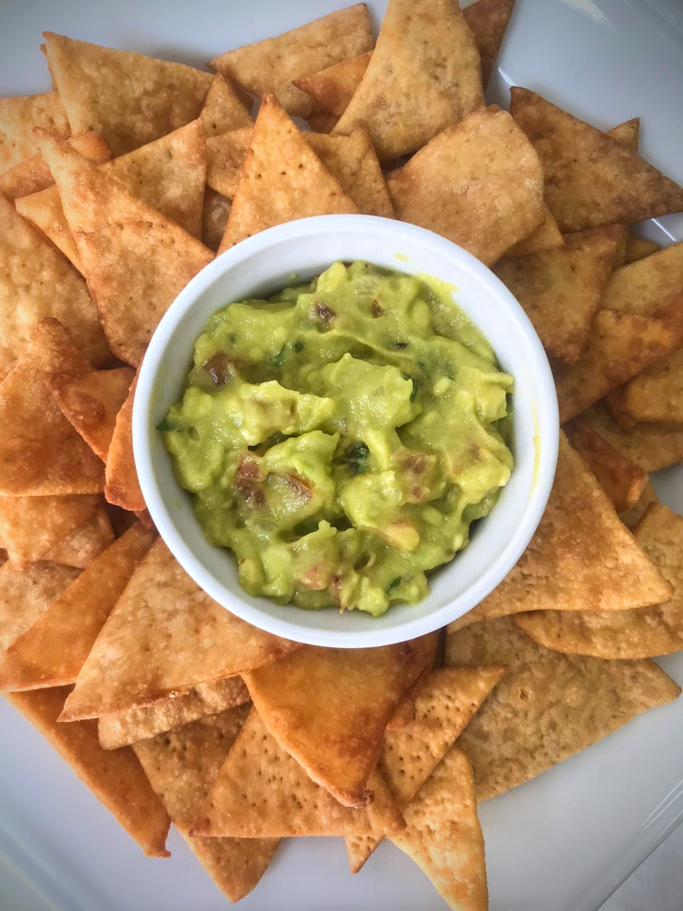
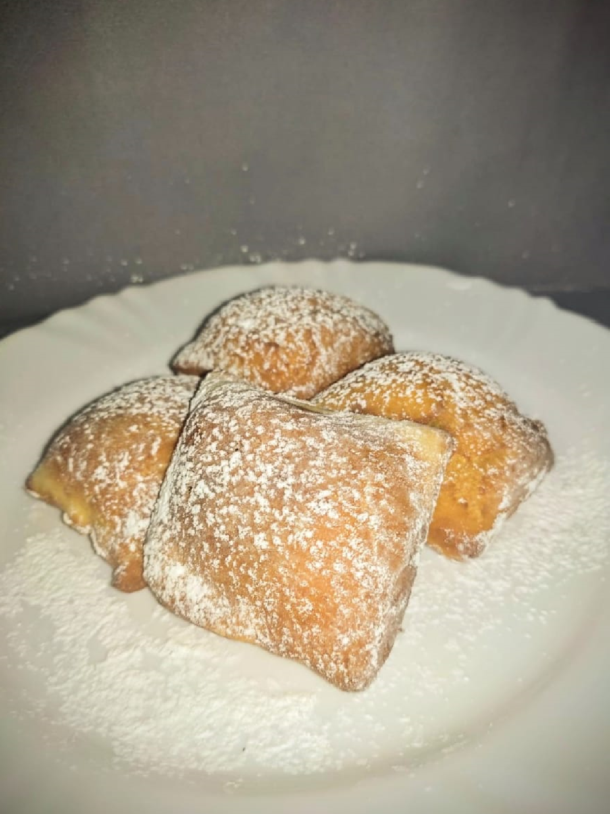
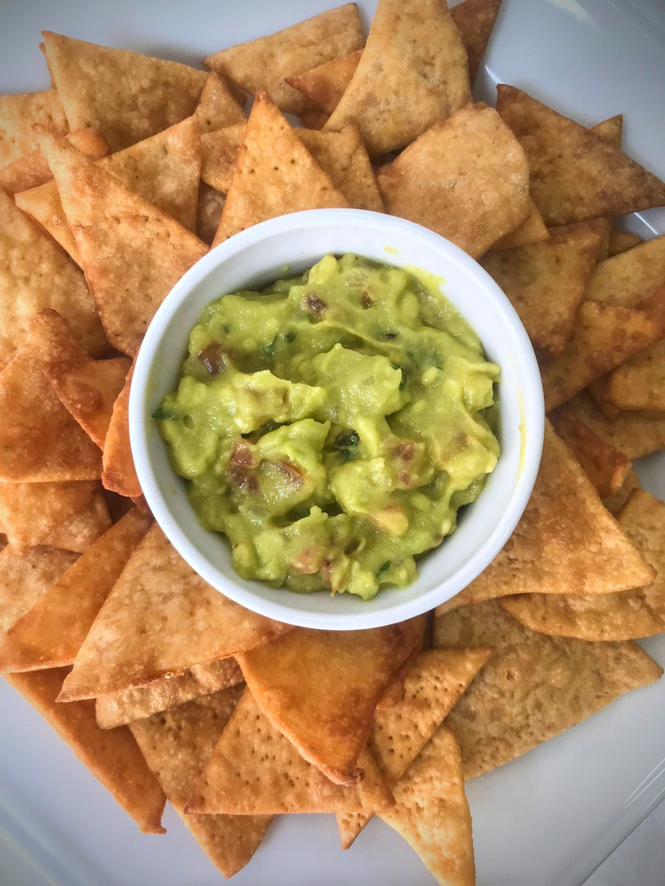
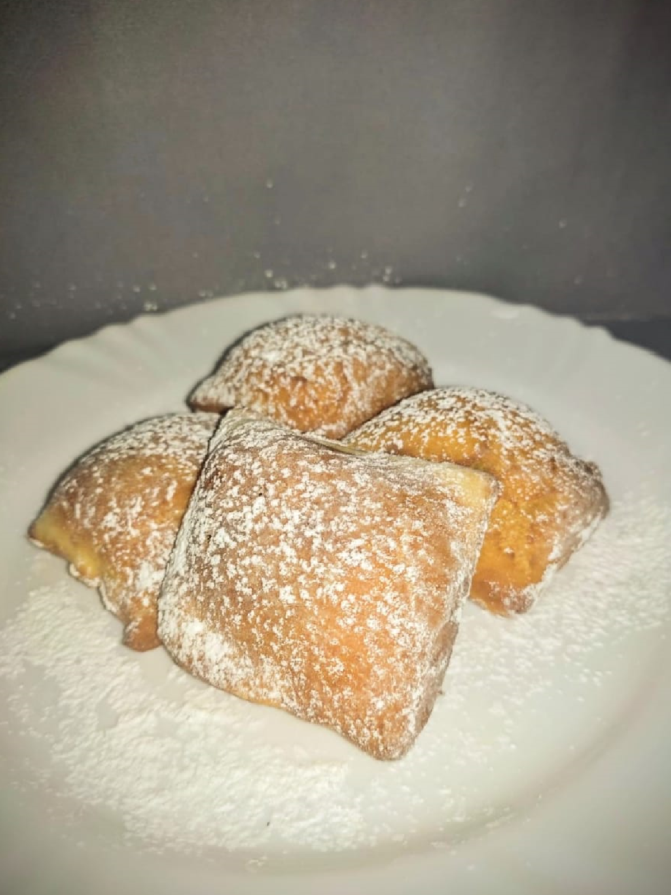

Se VOCÊ sempre quis APRENDER, FAZER ou PROVAR os pratos dos filmes e QUEBRAR A BARREIRA que as telas impõe,
NÃO perca esta OPORTUNIDADE ÚNICA
Aqui estão alguns dos motivos pelos quais VOCÊ PRECISA adquirir esse e-book
Cada uma das receitas foi recriada com carinho e atenção, passando por minuciosos passos de pesquisa para alcançar a maior fidelidade possível.
Todas elas foram testadas e aprovadas por, além do próprio time, diversos profissionais e colegas para garantir extrema qualidade e satisfação dos clientes.
Para tornar acessível a todos os que se interessaram na proposta, a equipe do Gastronomia Através das Telas criou um E-Book com todas as receitas estudadas e recriadas até aqui, contendo o passo-a-passo de cada uma delas, os ingredientes, ilustrações especiais, tendo 5 delas uma descrição com histórias do prato e de seu respectivo filme!
O que vou fazer hoje no almoço? Na janta? No café? Temos certeza que você já se perguntou isso. Com este e-book, ideias não vão faltar, com todas estas novas receitas para você fazer, saborear e surpreender todo mundo! Voltado para todos os gostos e idades, foram escolhidos diversos filmes e preparações diferentes para criar um ambiente divertido na hora de preparar e de comer.


Neste e-book, você irá encontrar 29 receitas passo a passo exclusivas e extremamente bem pesquisadas e testadas de forma a ter o maior grau de qualidade possível, além de ilustrações e histórias sobre alguns dos filmes que escolhemos. É uma experiência completa de cozinhar, aprender, se divertir e se deliciar no final!
Ao produzir o e-book, pensamos na forma de deixar o mais acessível possível para todos os públicos, criando as receitas usando ingredientes baratos e simples de serem adquiridos, além de usar técnicas simples que todos podem executar, fazendo assim uma experiência tranquila para qualquer cozinheiro!
As receitas do nosso e-book foram feitas com muita pesquisa, observação, testes e validação de muitas pessoas para trazer o melhor e mais coerente resultado possível de acordo com o que vemos nos filmes, portanto, são receitas que não estão em mais nenhum lugar e tem uma qualidade garantida não só por nós, mas também por aqueles que já adquiriram e provaram por si mesmos, sendo assim, tudo o que está neste e-book é totalmente exclusivo para aqueles que adquirem o livro do Gastronomia Através das Telas!